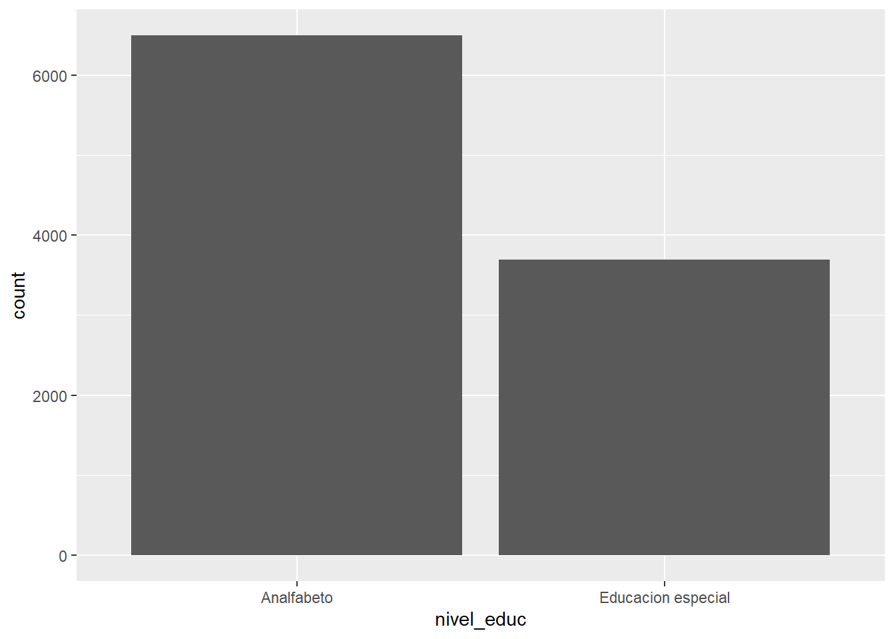

Trabajo 1
Trabajo 1
La pobreza extrema y el desarrollo humano
Por Berta Bugueño
Durante los últimos años se ha visto una disminución de la pobreza en Chile, especialmente en las zonas rurales del país, la multidimencionalidad que influye en este acontecer sociológico es, desde el punto de vista de la ética social cristiana donde “se subraya la relevancia de realizar evaluaciones cualitativas sistemáticas sobre la pobreza y el desarrollo humano […] La pobreza y el desarrollo humano son fenómenos sociales complejos” [@daherEvaluacionCualitativaSistematica2019]
Vamos a estudiar que nuevos trabajos y oportunidades de acceso a tecnologías, conectividades, educación, espacios públicos y vivienda han incidido para que la brecha de la pobreza en las zonas rurales haya variado y disminuido considerablemente desde 1990, según un estudio de Pérez, “la distancia al mercado incide directamente sobre la pobreza de las personas, la movilidad influye directamente”. [@perezEfectoDistanciaMercado2013].
La mayoría de las zonas rurales en Chile tiene muy mala conectividad, en las comunas rurales no existe el Metro, los otros medios de transportes son con frecuencias, en su mayoría muy distantes, sus máquinas antiguas, así mismo la educación es un factor preponderante para salir de la pobreza, en muchos casos en los sectores donde hay pobreza extrema, existe sólo educación municipalizada y no existe ninguna entidad de educación superior.
Por otra parte el acceso a la vivienda también es un tema relevante y es uno de los factores que mide la pobreza, en algunos sectores la denominación de suelo impide que se realicen proyectos habitacionales.
también es atendible el cómo perciben las personas la desigualdad, que según Paradox” Las investigaciones sugieren que los ciudadanos de las sociedades desiguales están menos preocupados que las sociedades más igualitarias”[@mijsParadoxInequalityIncome2021a]
Un Factor muy importante es la salud mental, Vera-Bachmann establece que “estudios constatan que la situación social de pobreza socioeconómica es un factor de riesgo psicosocial en general y de salud mental en particular, que afecta de manera especial a los sectores rurales” tambien explica la relación de hogares de extrema pobreza con la cantidad de niños, existiendo una relación entre estas variables, así mismo en su artículo establece que niños y jóvenes abandonan los estudios e ingresan prematuramente al mundo del trabajo [@bachmannResiliencePovertyRurality2015]
Se espera dilucidar que, a medida que aumentan las oportunidades de acceso a bienes y servicios, especialmente la educación, que mejoran la calidad de vida en las zonas rurales, disminuya la pobreza de sus habitantes. Desde el punto de vista teológico se puede observar que: “considerando las múltiples dimensiones involucradas, así como el horizonte humanizador y del bien común. Se destaca la necesidad de realizar evaluaciones cualitativas sistemáticas a nivel nacional e internacional que complementen las mediciones cuantitativas, presentando sus aportes y consideraciones metodológicas y éticas. Finalmente, abordar las implicaciones y conexiones entre estas nociones, así como los desafíos conceptuales y metodológicos para la evaluación de la pobreza y el desarrollo humano en el marco de la Ética Social Cristiana” [@daherEvaluacionCualitativaSistematica201]
title: "Trabajo 2"
format: html
editor: visual
bibliography: Estratificacion social (brechas de pobreza).bib
link-citations: trueTrabajo 2
La pobreza extrema y el desarrollo humano
Cargar base de datos
En este trabajo se toma la desición de cambiar la base de datos a EBS 2021 (Encuesta de Bienestar Social), porque la base de datos del trabajo N° 1 fue muy difícil de cargar, y no contaba con todos los datos necesarios para el planteamiento del trabajo o investigación a realizar.
Selección de variables
Se trabajará con variables nivel educacional, satisfacción de ingresos, satisfacción de vivienda educación ingresos, zona, de la encuesta EBS (Encuesta de bienestar Social), que se ejecuta en conjunto por el Ministerio de Desarrollo Social y el Instituto Nacional de Estadísticas (INE) en Chile, contiene estas variables que se corresponden a lo que esta investigación se plantea dilucidar.
En el caso de la variable nivel educacional (e6a) se toma la desición de realizar la investigación tomando esta variable de la base de datos del 2020 porque la del 2021 tiene muchos casos perdidos, además la misma base de datos EBS 2021 incluye la variable de la Casen del nivel educacional del año 2020
Tabla descriptiva general
Operacionalización de variables
satisfacción con el nivel educacional (x) <numeric>
# total N=10921 valid N=10921 mean=3.38 sd=1.18
Value | Label | N | Raw % | Valid % | Cum. %
--------------------------------------------------------------------
1 | 1. Totalmente insatisfecho | 536 | 4.91 | 4.91 | 4.91
2 | 2. Insatisfecho | 2940 | 26.92 | 26.92 | 31.83
3 | 3. Indiferente | 1028 | 9.41 | 9.41 | 41.24
4 | 4. Satisfecho | 4655 | 42.62 | 42.62 | 83.87
5 | 5. Totalmente satisfecho | 1762 | 16.13 | 16.13 | 100.00
<NA> | <NA> | 0 | 0.00 | <NA> | <NA>satisfacción con los ingresos (x) <numeric>
# total N=10921 valid N=10921 mean=2.93 sd=1.18
Value | Label | N | Raw % | Valid % | Cum. %
--------------------------------------------------------------------
1 | 1. Totalmente insatisfecho | 1165 | 10.67 | 10.67 | 10.67
2 | 2. Insatisfecho | 3759 | 34.42 | 34.42 | 45.09
3 | 3. Indiferente | 1403 | 12.85 | 12.85 | 57.93
4 | 4. Satisfecho | 3818 | 34.96 | 34.96 | 92.89
5 | 5. Totalmente satisfecho | 776 | 7.11 | 7.11 | 100.00
<NA> | <NA> | 0 | 0.00 | <NA> | <NA>satisfacción con la vivienda (x) <numeric>
# total N=10921 valid N=10921 mean=3.72 sd=1.07
Value | Label | N | Raw % | Valid % | Cum. %
--------------------------------------------------------------------
1 | 1. Totalmente insatisfecho | 362 | 3.31 | 3.31 | 3.31
2 | 2. Insatisfecho | 1763 | 16.14 | 16.14 | 19.46
3 | 3. Indiferente | 797 | 7.30 | 7.30 | 26.76
4 | 4. Satisfecho | 5652 | 51.75 | 51.75 | 78.51
5 | 5. Totalmente satisfecho | 2347 | 21.49 | 21.49 | 100.00
<NA> | <NA> | 0 | 0.00 | <NA> | <NA>efecto de la educación sobre los ingresos (x) <numeric>
# total N=10921 valid N=10188 mean=2.81 sd=1.30
Value | Label | N | Raw % | Valid % | Cum. %
-----------------------------------------------------
1 | 1. Nada | 2338 | 21.41 | 22.95 | 22.95
2 | 2. Poco | 1796 | 16.45 | 17.63 | 40.58
3 | 3. Algo | 2480 | 22.71 | 24.34 | 64.92
4 | 4. Bastante | 2637 | 24.15 | 25.88 | 90.80
5 | 5. Mucho | 937 | 8.58 | 9.20 | 100.00
<NA> | <NA> | 733 | 6.71 | <NA> | <NA>En primer lugar en satisfacción con el nivel educacional, de un total de 10188 encuestados, el mayor porcentaje corresponde a satisfechos con 42,82% (hay que poner 4.362 encuestados) y con la menor preferencia que es 4.68% (o hay que poner 477 encuestados) para totalmente insatisfecho, la desviación estándar es de 1.17 y la media de 3.39. Siendo la suma de satisfecho con totalmente satisfecho de 6.003 encuestados se puede decir que de la muestra de la población de encuestados un 58.93% se manifiesta encontrarse satisfecho o totalmente satisfecho con el nivel educacional.
Satisfacción con los ingresos, de una muestra de 10.188 encuestados, 3.573 manifestaron estar satisfecho, pero en una cifra muy cercana, 3.521 personas manifestaron estar insatisfecho, la cifra más baja es con los encuestados que dijeron estar totalmente satisfecho que corresponden a 721 encuestados, la desviación estándar es de 1.18 y la media de 2.93. Lo que indica este resultado es que de los encuestados pocas personas se encuentran totalmente satisfechas y satisfechos e insatisfechos son muy similares respecto a la satisfacción de ingresos de la muestra.
Satisfacción con la vivienda, del total de la muestra de 10.188 encuestados, donde la media es 3.71 y la desviación estándar 1.08, la mayor preferencia es para “satisfecho” con 5.258 encuestados con un 51.61% y la menor preferencia 347 encuestados “Totalmente insatisfecho” que representan un 3.41%. Por lo que se puede decir que la mayoría de los encuestados se encuentra satisfecho con la vivienda.
Efecto de educación sobre los ingresos, con una muestra poblacional de 10.188 encuestados, donde la media es 2.81 y la desviación estándar en 1.30 2.637 de los encuestados opinan que el efecto de la educación sobre los ingresos es “bastante”, y la cifra más baja quienes piensan que el efecto es “mucho” con 937 encuestados, sin embargo si sumamos quienes opinaron que loa efectos son nada o poco suman 4.134 personas representando un 40.58% de los encuestados.
Recodificación de variables
Variable binaria de zona
x <numeric>
# total N=10188 valid N=10188 mean=0.14 sd=0.35
Value | Label | N | Raw % | Valid % | Cum. %
------------------------------------------------
0 | Urbano | 8722 | 85.61 | 85.61 | 85.61
1 | Rural | 1466 | 14.39 | 14.39 | 100.00
<NA> | <NA> | 0 | 0.00 | <NA> | <NA>De una muestra poblacional de 10188 encuestados, 8.722 corresponden a urbanos y 1.466 a rural.
Variable nivel educacional
Recodificación nivel educacional
Se recodifica la variable de nivel educacional para trabajar con menos categorías y facilitar el análisis. La recodificación queda de la siguiente manera: Se denomina como analfabeto a quienes están en el N°1= nunca asistió, N° 2 sala cuna, N° 3 jardín infantil (medio menor y medio mayor), N° 4 Prekinder/ Kínder. El segundo grupo es Enseñanza básica= N°6, primaria o preparatoria (sistema antiguo), N°7 educación básica. Enseñanza media = N°8, Humanidades (sistema antiguo), N°9 Educación media científico humanista, N°10 Técnica comercial, Industrial o Normalista (sistema antiguo) N° 11 Educación media Técnico profesional. Enseñanza superior= N° 12 Técnico Nivel Superior Incompleto (carrera de 1 a 3 años) N° 13 Técnico Nivel Superior Completo (carreras de 1 a 3 años) N°14, Profesional incompleto (Carreras de 4 o más años) N° 15, Profesional Completo (Carreras de 4 o más años) N° 16 Postgrado incompleto, N°17 Post grado completo. Además la educación especial queda en una categoría diferenciada porque no se especifica a que se refiere esta categoría, por lo que no se agrupa con los demás niveles.
Graficos
proc_data$nivel_educ <- car::recode(proc_data$nivel_educ, “c(1,2,3,4)=1; c(5)=2; c(6,7)=3; c(8,9,10,11)=4;
c(12,13,14,15,16,17)=5”)
proc_data2 = proc_data

Gráfico N° 1, eleboración propia, este gráfico de barras muestra el Nivel Educacional. Se puede apreciar que la moda es educación media, además las categorías con menos casos son las de analfabeto y educación especial.
Gráfico N° 2 , elaboración propia, este gráfico de barras satis-ingreso, a simple vista parece bimodal, se puede apreciar que la moda (4 satisfecho) es muy parecida a (2 insatisfecho), sin embargo, el promedio es 2.93,lo que indica que hay una baja satisfacción con los ingresos.
Gráfico N° 3, elaboración propia, este gráfico de barras, satisfacción con la vivienda, la moda es la N° 4 “satisfecho” , por lo que se puede decir que la mayoría de las personas encuestadas se siente satisfecha o totalmente satisfecha con su vivienda.
Con esta visión general de los datos podemos analizar la asociación entre las variables (trabajo 3 enviado)
SE AGREGAR GRÁFICO Y EL ANÁLISIS DEL TRABAJO 3
Este trabajo fue enviado aparte, anteriormente, pero se incluye el gráfico de matriz con el correcto análisis
Gráfico N° 4, eleboración propia. Este gráfico/matriz representa el grado de asociación entre variables mediante el tamaño de los círculos e intensidad de colores, y el signo de la asociación se representa con una gradiente de colores que va del azul (positivo) al rojo (negativo). Por lo tanto, se puede ver que la mayor asociación es entre nivel educacional e ingresos con 0.37 que corresponde a una relación moderada. También se observa que las correlaciones de las variables son positivas, excepto la asociación de las variables zona-nivel educacional, que da un valor negativo -0.18, lo que indica que es una asociación con fuerte correlación negativa y que corresponde el valor más bajo de este gráfico
TRABAJO 4
Tabla descriptiva
Regresión
| ID | Name | Label | Values | Value Labels |
|---|---|---|---|---|
| 1 | nivel_educ | 1 2 3 4 5 |
Analfabeto Educación especial Educación básica Educación media Educación superior |
|
| 2 | satisniveleducacional | satisfacción con el nivel educacional | 1 2 3 4 5 |
1. Totalmente insatisfecho 2. Insatisfecho 3. Indiferente 4. Satisfecho 5. Totalmente satisfecho |
| 3 | satis_ingreso | satisfacción con los ingresos | 1 2 3 4 5 |
1. Totalmente insatisfecho 2. Insatisfecho 3. Indiferente 4. Satisfecho 5. Totalmente satisfecho |
| 4 | satis_vivienda | satisfacción con la vivienda | 1 2 3 4 5 |
1. Totalmente insatisfecho 2. Insatisfecho 3. Indiferente 4. Satisfecho 5. Totalmente satisfecho |
| 5 | educ_ingresos | efecto de la educación sobre los ingresos | 1 2 3 4 5 |
1. Nada 2. Poco 3. Algo 4. Bastante 5. Mucho |
| 6 | zona | 0 1 |
Urbano Rural |
Regresión lineal
<table class="texreg" style="margin: 10px auto;border-collapse: collapse;border-spacing: 0px;caption-side: bottom;color: #000000;border-top: 2px solid #000000;">
<caption>Statistical models</caption>
<thead>
<tr>
<th style="padding-left: 5px;padding-right: 5px;"> </th>
<th style="padding-left: 5px;padding-right: 5px;">Modelo 1</th>
<th style="padding-left: 5px;padding-right: 5px;">Modelo 2</th>
<th style="padding-left: 5px;padding-right: 5px;">Modelo 3</th>
</tr>
</thead>
<tbody>
<tr style="border-top: 1px solid #000000;">
<td style="padding-left: 5px;padding-right: 5px;">(Intercept)</td>
<td style="padding-left: 5px;padding-right: 5px;">1.39</td>
<td style="padding-left: 5px;padding-right: 5px;">2.93<sup>***</sup></td>
<td style="padding-left: 5px;padding-right: 5px;">2.83<sup>***</sup></td>
</tr>
<tr>
<td style="padding-left: 5px;padding-right: 5px;"> </td>
<td style="padding-left: 5px;padding-right: 5px;"> </td>
<td style="padding-left: 5px;padding-right: 5px;">(0.01)</td>
<td style="padding-left: 5px;padding-right: 5px;">(0.01)</td>
</tr>
<tr>
<td style="padding-left: 5px;padding-right: 5px;">zona</td>
<td style="padding-left: 5px;padding-right: 5px;">-0.19</td>
<td style="padding-left: 5px;padding-right: 5px;">0.06</td>
<td style="padding-left: 5px;padding-right: 5px;">-0.18<sup>***</sup></td>
</tr>
<tr>
<td style="padding-left: 5px;padding-right: 5px;"> </td>
<td style="padding-left: 5px;padding-right: 5px;"> </td>
<td style="padding-left: 5px;padding-right: 5px;">(0.03)</td>
<td style="padding-left: 5px;padding-right: 5px;">(0.04)</td>
</tr>
<tr style="border-top: 1px solid #000000;">
<td style="padding-left: 5px;padding-right: 5px;">R<sup>2</sup></td>
<td style="padding-left: 5px;padding-right: 5px;"> </td>
<td style="padding-left: 5px;padding-right: 5px;">0.00</td>
<td style="padding-left: 5px;padding-right: 5px;">0.00</td>
</tr>
<tr>
<td style="padding-left: 5px;padding-right: 5px;">Adj. R<sup>2</sup></td>
<td style="padding-left: 5px;padding-right: 5px;"> </td>
<td style="padding-left: 5px;padding-right: 5px;">0.00</td>
<td style="padding-left: 5px;padding-right: 5px;">0.00</td>
</tr>
<tr style="border-bottom: 2px solid #000000;">
<td style="padding-left: 5px;padding-right: 5px;">Num. obs.</td>
<td style="padding-left: 5px;padding-right: 5px;">10188</td>
<td style="padding-left: 5px;padding-right: 5px;">10188</td>
<td style="padding-left: 5px;padding-right: 5px;">10188</td>
</tr>
</tbody>
<tfoot>
<tr>
<td style="font-size: 0.8em;" colspan="4"><sup>***</sup>p < 0.001; <sup>**</sup>p < 0.01; <sup>*</sup>p < 0.05</td>
</tr>
</tfoot>
</table>En el modelo 1 se incluye zona como predictor, que tiene como coeficiente de regresión -0,40. Esto indica que, disminuye la población de la zona rural en 0.40 unidades. Efecto que lo podemos extrapolar a la población con un 99,9 % de confianza (p< 0,001) El intercepto de 4.20, lo que indica que (teóricamente) las personas de zona urbana tienen una educación de 4.20. El R2 indica el modelo 1 logra explicar el 3% de la varianza de la variable dependiente (R2=0,03)
En el modelo 2 se incluye zona como predictor, que tiene como coeficiente de regresión 0.06 Esto indica que, la satisfacción con el ingreso en zona rural es de 0.06 mayor que la satisfacción de las personas en zona urbana. no es estadísticamente significativo (p<0,01) El intercepto de 2.93, lo que indica que (teóricamente) las personas de zona urbana tienen una satisfacción con el ingreso de 2.93. El R2 indica el modelo 2 logra explicar el 0% de la varianza de la variable dependiente (R2=0,00)
En el modelo 3 se incluye zona como predictor, que tiene como coeficiente de regresión -0.18 Esto indica que, el efecto de la educación sobre el ingreso disminuye en la población de la zona rural en -0.18 unidades. Efecto que lo podemos extrapolar a la población con un 99, 9% de confianza (p< 0.001) El intercepto de 2.83, lo que indica que (teóricamente) las personas de zona urbana tienen efecto de la educación sobre el ingreso de 2.83. El R2 indica el modelo 3 logra explicar el 0% de la varianza de la variable dependiente (R2=0,00)
Graficar
Grafico N° 5, elaboración propia, Para analizar este gráfico se hará mención también al modelo de regresión estimado, el gráfico muestra que hay una distribución desigual de la población entre las diferentes zonas. La zona urbana tiene un nivel educacional de la población significativamente mayor que la zona rural, según la muestra poblacional.
Notas explicativas
x <numeric>
# total N=10188 valid N=10188 mean=0.00 sd=0.00
Value | Label | N | Raw % | Valid % | Cum. %
-------------------------------------------------
0 | Urbano | 10188 | 100 | 100 | 100
1 | Rural | 0 | 0 | 0 | 100
<NA> | <NA> | 0 | 0 | <NA> | <NA>Se recodificó la variable categórica “zona” (urbano 0 y rural 1) Esto para poder hacer la regresión lineal, facilitar la comprensión de los resultados y presentarlo en un formato compatible.
Tambien para la obtención del modelo se mantuvo la variable de nivel educaional como numérica